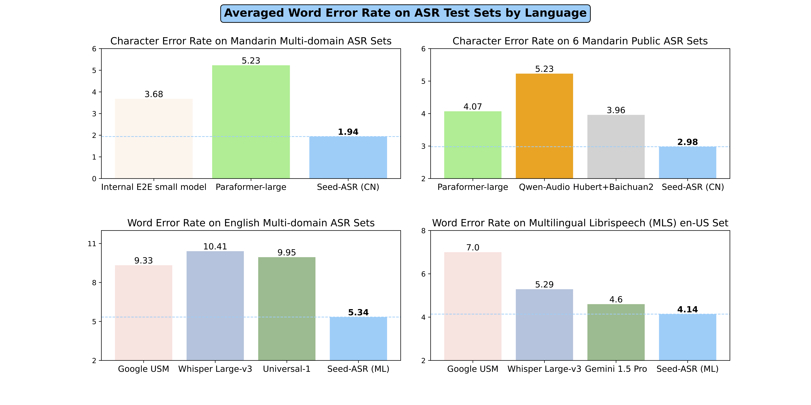
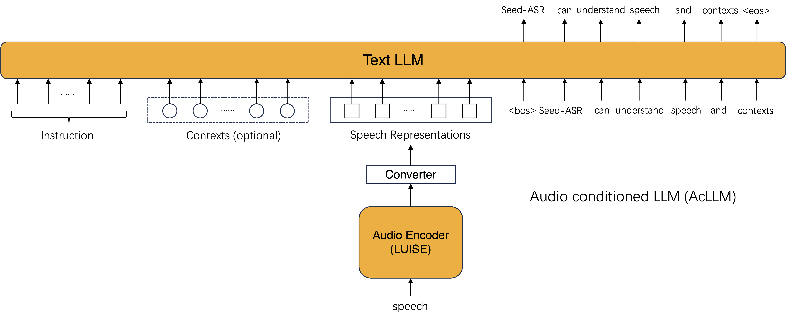

Seed-ASR:
Understanding Diverse Speech and Contexts with LLM-based Speech Recognition
[Paper]
Seed Team
ByteDance
Abstract. Modern automatic speech recognition (ASR) model is required to accurately transcribe diverse speech signals (from different domains, languages, accents, etc) given the specific contextual information in various application scenarios. Classic end-to-end models fused with extra language models perform well, but mainly in data matching scenarios and are gradually approaching a bottleneck. In this work, we introduce Seed-ASR, a large language model (LLM) based speech recognition model. Seed-ASR is developed based on the framework of audio conditioned LLM (AcLLM), leveraging the capabilities of LLMs by inputting continuous speech representations together with contextual information into the LLM. Through stage-wise large-scale training and the elicitation of context-aware capabilities in LLM, Seed-ASR demonstrates significant improvement over end-to-end models on comprehensive evaluation sets, including multiple domains, accents/dialects and languages. Additionally, Seed-ASR can be further deployed to support specific needs in various scenarios without requiring extra language models. Compared to recently released large ASR models, Seed-ASR achieves 10%-40% reduction in word (or character, for Chinese) error rates on Chinese and English public test sets, further demonstrating its powerful performance.

Contents
System Overview

Figure 1.The model framework used in Seed-ASR. When contexts are provided, the instruction is "There are relevant contexts, transcribe the speech into text:". Otherwise, the instruction is "Transcribe the speech into text:".
Model & Evaluation
Context-aware Ability
| Context-Aware Type | Demo | Explanation |
|---|---|---|
| The content of dialogue history |
In the first round of conversation, "庞葱 (Pang Cong)" is mistakenly recognized as the homophone "庞冲 (Pang Chong)" without contextual knowledge. When further discussing the characters in "The Romance of the Three Kingdoms" with Doubao, "庞冲 (Pang Chong)" is recognized correctly in the second attempt, as the conversation history mentioning this name is added to the recognition prompt as context. |
|
| The name of agent |
For the conversational agent "枫丹 (Feng Dan)", its nickname "枫丹 (Feng Dan)" will be added to the recognition prompt as context to improve the accuracy of recognizing the name of the conversational agent. However, without relevant background knowledge provided in the prompt, the name of the agent may be recognized as other semantically reasonable homophones. |
|
| The decription information of agent |
When talking with the conversational agent "顾易 (Gu Yi)", the agent's description text will be added to the recognition prompt as context to improve the accuracy of recognizing descriptions related to the conversational agent. |
|
| The modification history record |
In the first video, professional phrase in skiing such as the "立刃 (li ren)" may be recognized as the homophone "利刃 (li ren)". However, users will correct the wrong recognition results in the subtitles. These modifications, such as the transformation from "利刃" to "立刃" will be used as recognition prompts when recognizing the second video, so the same errors in the second video will be avoided. |
|
| The name of meeting attendees |
When inviting attendees to a Lark meeting, all attendees' names will be used as context. When the same attendee's name appears again, the recognition result will be corrected. |
Transcripts of Seed-ASR on Multi-domain Set
| Audio | Seed-ASR | |
|---|---|---|
| Sample1 | ||
| Sample2 | ||
| Sample3 | ||
| Sample4 | ||
| Sample5 | ||
| Sample6 | ||
| Sample7* | ||
| Sample8 |
Transcripts of Seed-ASR on Multi-dialect Set
| Dialect | Audio | Reference | Seed-ASR |
|---|---|---|---|
| Wuu | |||
| Cantonese | |||
| Sichuan | |||
| Jlua | |||
| Zgyu | |||
| Xiang |
Transcripts of Seed-ASR on Multi-accent Set
| Accent | Audio | Seed-ASR |
|---|---|---|
| Yunnan Accent | ||
| Gansu Accent | ||
| Henan Accent | ||
| Jiangxi Accent | ||
| Anhui Accent | ||
| Hunan Accent |
Transcripts of Seed-ASR on Hardcase Set
| Audio | Seed-ASR | |
|---|---|---|
| Sample1 | ||
| Sample2 | ||
| Sample3* | ||
| Sample4 |
Transcripts of Seed-ASR on Speech with Background Noise
| Audio | Seed-ASR | |
|---|---|---|
| Sample1 | ||
| Sample2 | ||
| Sample3 | ||
| Sample4 |
*Sample from "Conneau, Alexis, et al. "Fleurs: Few-shot learning evaluation of universal representations of speech." 2022 IEEE Spoken Language Technology Workshop (SLT). IEEE, 2023.".